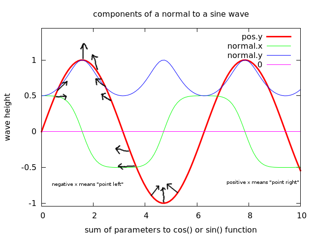
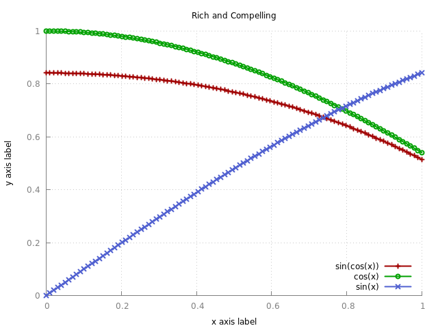

When I was building the vertex displacement demo I noticed that there's scant explanation of how to calculate normals to a wave. So I've made a little mini tech-report/tutorial on the topic:
I keep losing the information on how to make gnuplot charts look nice, so I'll paste it right here. It's from http://youinfinitesnake.blogspot.ie/2011/02/attractive-scientific-plots-with.html
SVG or EPS are the formats of purists, but most of the time we need a PNG or PDF. There is also a PDFCAIRO with the same parameters.
Extra chunky for print and for the visually impeded! For the slim version, change pngcairo from linewidth 4 to 1:
I did teach a tutorial on gnuplot, but it's so easy to forget these obscure little commands...note that you can also run a script by copy-pasting the commands to a file and calling gnuplot script.gp